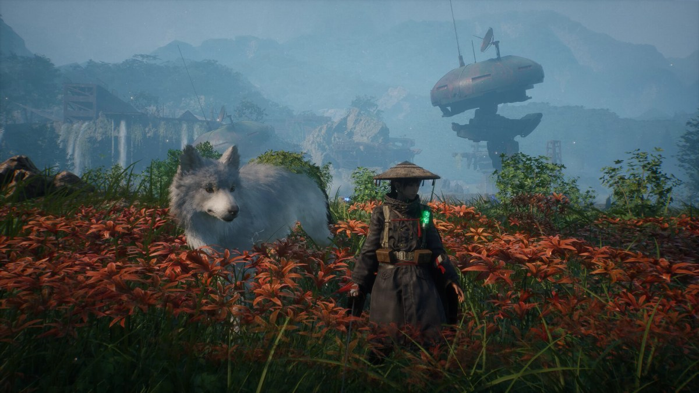

Le directeur de Beast of Reincarnation s’excuse pour la qualité médiocre du jeu

🔥 Top produits tech du moment
Publicité — Liens de partenariat Amazon : une commission peut être reversée, sans surcoût pour vous.
L'actualité tech ne cesse d'évoluer. Nouveaux produits, acquisitions, découvertes : chaque jour apporte son lot d'informations importantes pour comprendre le monde numérique de demain.
Ce qu'il faut retenir
Directeur de Beast of Reincarnation, Kota Furushima s'est exprimé sur l'accueil pour le moins tiède accordé au jeu.
Il fait amende honorable, et concède ouvertement qu'il y a des points à améliorer.
Pourquoi c'est important
Cette information pourrait avoir des répercussions sur tout le secteur technologique. Elle concerne directement les utilisateurs de technologies numériques et mérite d'être suivie de près dans les prochaines semaines. Le directeur de Beast of Reincarnation s’excuse pour la qualité médiocre du jeu est ainsi un signal à prendre en compte pour comprendre les évolutions du secteur.
En résumé
Retenez l'essentiel : Le directeur de Beast of Reincarnation s’excuse pour la qualité médiocre du jeu. Cette actualité a été rapportée par Numerama. Nous continuerons de suivre ce sujet et de vous tenir informés des prochaines évolutions.
Source : Numerama